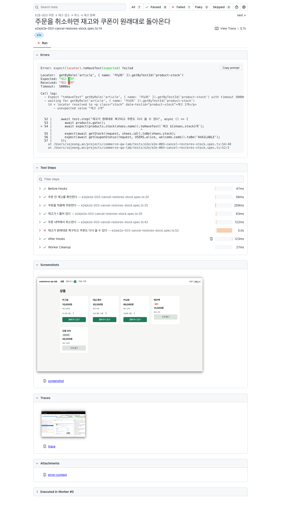

이제 검사 로봇이 크롬 창을 열어 손님처럼 상품을 클릭하고, 쿠폰을 입력하고, 주문하고, 취소합니다. 사람이 화면을 보지 않아도 됩니다.
| 번호 | 여정 | 확인하는 것 |
|---|---|---|
| E2E-001 | 상품 선택 → 장바구니 → 주문 → 완료 | 주문번호와 결제금액 표시, 장바구니 비워짐, 재고 표시 감소 |
| E2E-002 | 쿠폰 적용 → 할인 확인 → 주문 | 할인 −5,000원, 최종 30,000원, 쿠폰이 사용 완료로 바뀌고 재사용 거절 |
| E2E-003 | 주문 → 재고 감소 → 취소 → 재고 원복 | 재고 3→2→3, 상태 "취소됨", 쿠폰 복구, 취소 버튼 사라짐 |
| E2E-004 | 재고보다 많은 수량 주문 | 담기 거절, 다른 손님이 먼저 사 간 경우 주문 거절, 주문 생기지 않음 |
| E2E-005 | 최소 주문금액 미충족 | 쿠폰 적용 불가 + 이유, 경계값 30,000원에서 적용, 줄이면 자동 해제 |
왜 5가지뿐인가? 재고를 0개로 바꿔 보거나 수량에 "abc"를 넣어 보는 식의 경우의 수는 이미 API 검사가 맡고 있습니다. 브라우저 검사는 느리기 때문에 "손님이 화면에서 목표를 끝까지 달성할 수 있는가"만 확인합니다. 이게 테스트 피라미드의 핵심입니다.
브라우저 검사는 "화면에 30,000원이라고 써 있다"에서 멈추기 쉽습니다. 그런데 화면 글자는 맞는데 실제 데이터가 틀릴 수 있습니다. 그래서 각 여정에서 화면 표시와 서버 상태를 둘 다 확인합니다.
주문번호, 금액, 재고 표시, 상태 배지, 안내 문구
재고가 정말 줄었는지, 쿠폰이 사용 처리됐는지, 장바구니가 비워졌는지, 주문이 생기지 않았는지
E2E-004에서는 "장바구니를 열어 둔 사이 다른 손님이 먼저 사 가는" 상황을 만들어야 하는데, 브라우저 두 개를 띄우는 대신 API로 사전 조건을 만들고 확인만 화면으로 합니다. 준비는 빠르게, 검증은 사용자 관점으로.
| 원칙 | 이 프로젝트에서 |
|---|---|
| 고정 대기 금지 | "3초 기다린다" 대신 "결제금액이 30,000원이 될 때까지" 같은 조건으로 기다립니다. 코드 전체에 고정 대기가 0건입니다 |
| 이름으로 찾기 | 화면 구조(태그, 클래스) 대신 사람이 읽는 이름으로 찾습니다. "장바구니 담기" 버튼, "머그컵 수량" 입력칸처럼 |
| 범위 좁히기 | 목록 안 요소는 카드나 행으로 범위를 좁힌 뒤 찾습니다. 같은 이름이 여러 개여도 헷갈리지 않습니다 |
| 재시도 금지 | 가끔 실패하는 검사를 다시 돌려 통과시키지 않습니다. 원인을 찾아 고칩니다 |
| 화면 찾는 법 분리 | "무엇을 어떻게 찾는가"는 화면별 파일에 모았습니다. 화면이 바뀌어도 검사 본문은 그대로입니다 |
| 일부러 넣은 버그 | 결과 |
|---|---|
| 취소해도 재고를 복구하지 않음 | E2E-003 실패로 잡힘 |
| 주문해도 쿠폰을 사용 처리하지 않음 | 2개 실패 |
| 쿠폰 할인을 적용하지 않음 | 3개 실패 |
| 재고보다 많이 담기 허용 | 2개 실패 |
| 주문 후 장바구니를 비우지 않음 | 2개 실패 |
| 재고를 항상 99개로 잘못 표시 | 4개 실패 |
아래는 "취소해도 재고를 복구하지 않는" 버그를 일부러 넣고 검사를 돌렸을 때 실제로 생성된 보고서 화면입니다.

손님이 무엇을 보고 있었는지 그대로 남습니다.
클릭 하나하나, 화면 변화, 주고받은 데이터를 되감아 볼 수 있습니다.
npm run report:e2e로 브라우저에서 엽니다.
npm test # 206개 전부 실행 npm run test:e2e # 브라우저 검사만 npm run report:e2e # 결과 보고서 열기
브라우저 검사 7개는 여정 5가지를 담고 있습니다(E2E-004가 상황별로 3개로 나뉩니다). 검사가 실행될 때 브라우저 창은 뜨지 않습니다. 화면 없이 도는 모드라 빠릅니다.